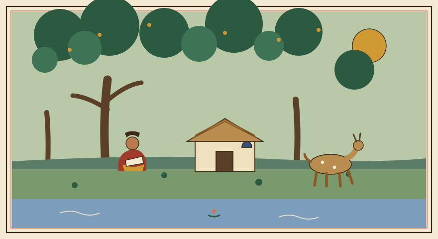

The Artist’s Leaf
The borrower, introduced
I grew up in Madurai hearing the epics the way they are meant to be heard — aloud, in pieces, argued over. I learned to draw the way they are meant to be drawn: by copying. Evenings at the museum with a sketchbook, reproducing miniature paintings leaf by leaf, as study — the copies were never sold, never shown as mine, and they taught me the only lesson that matters in this trade: the old painters were not decorating the story. They were reading it, in pigment.
My first paid game work was unglamorous and perfect: texture cleanup and icon batches for a mobile studio in Bengaluru, where a senior artist failed my first icon set for a reason I have never forgotten — “You drew the idea of the thing. Draw the thing.” Then production art on a tactical title, then a first turnaround set, then — in 2021 — a small studio trusted me with an epic hero of my own. I have worked on seven shipped titles since, all of them borrowed worlds, all of them under licence, every role stated in the register on the first leaf.
I am based in Bengaluru and work remotely with studios everywhere. I take two commissions at a time and no more; the planner on the first leaf is the same arithmetic I plan my own desk by, which is why it is printed where you can check it.

The Working Page
How a commission runs
Five stages, three of them gates. Nothing reaches production by drifting there.
- 01The brief
The studio states the title, the licence, the assets and the ship window. The estimator’s figure becomes the signed brief’s figure, or we argue until it does.
- 02Source reading
I read the episodes the assets touch — in the studio’s chosen translation, with its consultant’s notes. Sketches before this stage are doodles, and are treated as such.
- 03Thumbnails — Gate 1
Silhouettes and compositions, judged by the studio’s art director. Most ideas die here, cheaply and correctly.
- 04Cultural review — Gate 2
The studio’s consultant reviews depictions against its printed guidelines for sacred figures. A refusal here is final and is recorded, not appealed. Case File 03 is this gate, working.
- 05Production & delivery — Gate 3
Turnarounds, plates and files at production standard, checked at gameplay size before delivery. Layered sources, colour scripts and the interpretation register travel with the art.
The Honesty Page
The borrowing rules
The epics belong to everyone who grew up with them. An artist who adapts them is a borrower, and borrowers have rules. These are mine, printed where a studio can hold me to them.
- Claim only the art role. Art direction, production art and key art are different jobs. The register states which one I held on every title; a blurred credit is a borrowed credit.
- Read the source before the brief. If the brief and the episode disagree, the episode is quoted back to the studio before a line is drawn.
- Sacred figures follow the printed guidelines. The studio’s guidelines for depicting deities and sacred objects govern every plate. When in doubt, the review decides — not the deadline, and not me.
- Interpretations are labelled interpretations. What the text does not describe, I may invent — and the invention is registered as mine, so it can be struck without unbuilding the rest.
- A refused design is a delivered lesson. Refusals are shown, with the reason, wherever the studio permits. Six so far. The folio counts them as discipline because that is what they were.
Terms of Engagement
The terms, printed in full
Intellectual property. All commissioned art is work-for-hire: on final payment, the studio owns the delivered assets outright, including the layered sources. I retain no right to reuse a studio’s characters or worlds in other work. The plates on this site are displayed by each studio’s written permission, for portfolio purposes only; permission for one title never implies permission for another.
Fees and booking. Fees follow Table B on the first leaf. A commission is booked with a signed brief and a 40% booking fee; the balance falls due on delivery of the final gate’s files. Extra revision rounds beyond those included are charged at the printed rate, agreed before the round begins — never invoiced as a surprise.
Schedule. The planner’s arithmetic is the schedule’s arithmetic: 32 production hours a week, review gates included in the hours, and the printed rule when a scope outgrows its window — cut assets or add a second artist. I do not accept rush work that requires skipping Gate 2.
Cancellation. If a studio cancels after Gate 1, the booking fee covers the work done and the remaining fee is not charged. If I must withdraw — it has happened once, for a family emergency — the studio receives every file drawn to that day and a full refund of fees for undelivered gates.
Availability. Two commissions at a time. The register’s “booked” line is the honest waitlist: when it says the next window, it means the next window.